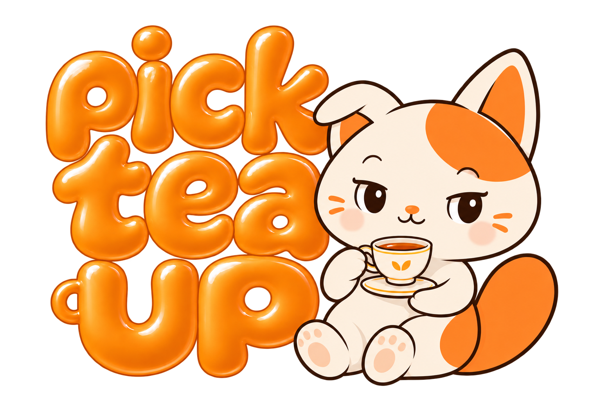
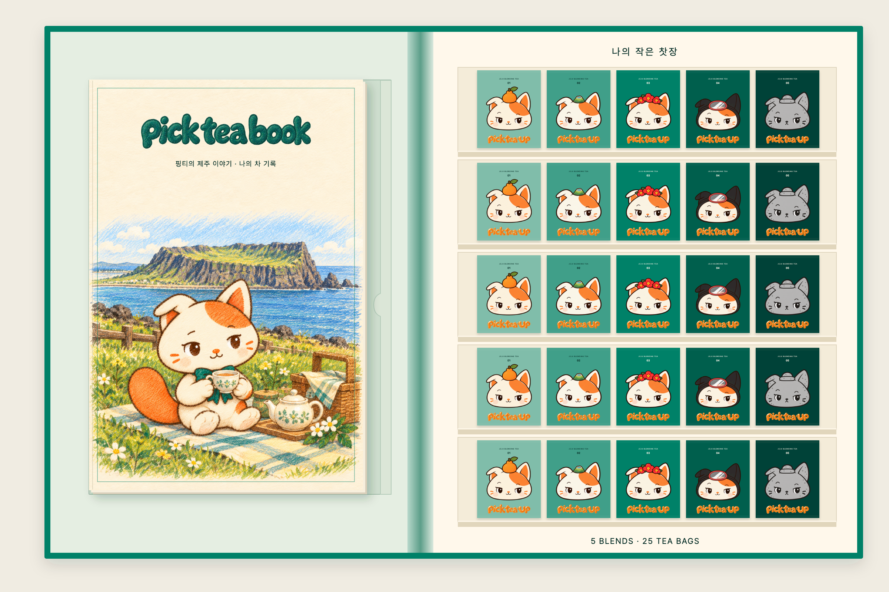
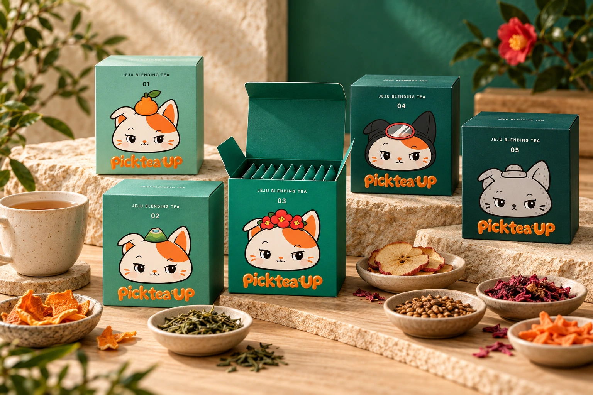

마음이 가는 차를 고르고
오늘의 무드, 오늘의 날씨에 따라
한 잔을 골라요.
ABOUT PICK TEA UP
좋아하는 차를 발견하고
그 시간을 나답게 기억할 수 있도록

WHERE WE BEGIN
차를 잘 알아야만 나에게 맞는 한 잔을 고를 수 있을까요?
픽티업은 그 질문에서 시작합니다. 차 종류를 잘 알지 못해도, 다구를 사용할줄 몰라도 괜찮아요. 마음이 가는 차를 고르고, 내가 느낀 것을 알아차리는 것부터 차생활은 시작합니다.
한 잔의 작은 발견이 매일 쌓여, 어느새 나만의 취향이 됩니다.
THE FIRST TEA CABINET
처음 만난 차가 좋았는지, 어떤 맛이 기억에 남았는지. 그 순간을 지나치지 않고 나만의 취향으로 이어갈 수 있다면 어떨까요?
픽티북 시그니처는 다섯 가지 차를 고르는 즐거움과 핑티의 이야기를 읽고 기록하는 시간을 한 권에 담았습니다. 처음 고른 한 잔에서 다시 찾고 싶은 맛까지, 나만의 찻장을 채워가는 시작이 되기를 바랍니다.
픽티북 시그니처 살펴보기 →
A STORY FROM JEJU
한라봉과 한라산, 동백과 바다, 돌담. 픽티업은 제주의 익숙한 풍경을 다섯 핑티의 모습과 다섯 가지 차를 만나는 이야기로 풀어냅니다.


MEET PIngTea
차가 어렵게만 느껴졌던 핑티는 제주에서 여러 차를 만나며 자신이 좋아하는 맛을 찾아갑니다. 핑티를 따라가다 보면, 나에게도 마음에 드는 차가 생길지 몰라요.
오늘의 차는 어땠나요?
다시 마시고 싶은 맛은 무엇인가요?
핑티의 이야기를 읽고, 오늘 마신 차의 맛과 기분을 내 방식대로 남겨보세요. 한 장씩 채우다 보면 나만의 찻장이 완성됩니다.
PICK / TASTE / KEEP
정답을 찾기보다 내 마음을 알아가는 세 가지 순간
오늘의 무드, 오늘의 날씨에 따라
한 잔을 골라요.
산뜻한가요? 고소한가요?
내가 느낀 맛에 편하게 표시해요.
차를 마신 날의 기분과
떠오른 생각을 자유롭게 남겨요.
YOUR LITTLE TEA CABINET
픽티업은 차를 고르고 기억하는 즐거움이 일상에 오래 머물기를 바랍니다.
찻장북에 제주 차와 함께한 시간을 남겨보세요.
픽티업 웹앱에서는 또 다른 차를 추천받고 기록을 이어나갈 수 있어요.